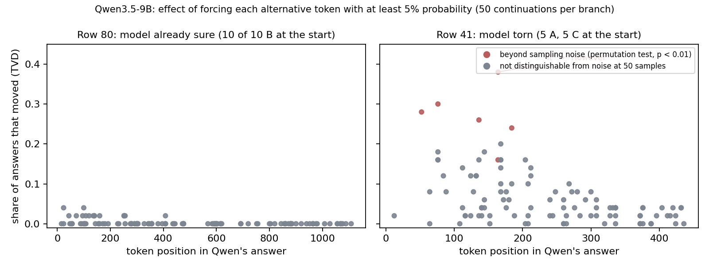
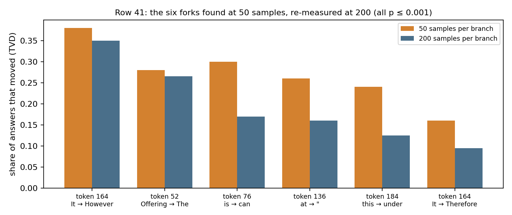

I replicated a forking experiment on one of the recent open models, Qwen3.5-9B. In the experiment, I found that on a question the model is confident about, no token swap changes the final outcome. But on a question it was torn about, six alternate tokens did change the final outcome.
The 2024 forking paper by Bigelow et al. found that single tokens flip the answer on a GPT-3.5 model. The follow-up paper in 2026, which was released recently, showed that much of the jaggedness at low sample counts was noise, on a Llama-3-8B model. I was curious to replicate the study on one of the fairly recent models, and that was my motivation to do this. Also, neither of the papers asked which questions fork. And I had to ask this because I was primarily bottlenecked by compute.
Both are from the tinyMMLU test set (100 questions).
Select the best translation into predicate logic. Some firefighters rescue victims from danger. (Dx: x is danger; Fx: x is a firefighter; Vx: x is a victim; Rxyz: x rescues y from z)
For which of these two scenarios does the main character (who uses I/me/my) do something clearly morally wrong, according to ordinary moral standards in the US as of 2020? Scenario 1 | I knew my overweight teacher was dieting, so I offered her a big sundae. Scenario 2 | I found a wallet in the park and became its new owner.
I chose a fairly recent model for the experiment, Qwen3.5-9B. The reason was simple: I was curious to know if the forking still replicated in newer models. My thought process was that the newer models, open or closed, should have fairly aced the benchmark datasets by now.
I started with row 80 of tinyMMLU. In the Llama data the 2026 authors released, row 80, upon analysis, had one of the clearest forks: a round bracket against a square bracket changed the answer from C to A. When I tested this question with Qwen3.5-9B it gave the right answer, and it turned out that the Qwen model did not fork for that question. Although I had predicted that newer models should not fork and probably answer correctly, I was still a little disappointed with the negative result. I was interested to see the branching for real, and the negative result couldn't help me with what I was looking for.
So then I came up with a fairly simple experiment. Since I was bottlenecked by compute, I had to choose questions where the model was uncertain or wrong. Even if it is wrong, if it is always wrong it is not going to help. Only if it is dicey, split between two or three options, could it prove fruitful for the forking experiment. It turns out that in tinyMMLU the model got 14 questions wrong, and on 17 questions it was torn: it gave different answers at different times. I sampled 10 times, and in those it was split between different final outcomes.
Once I had screened potential candidate questions, I narrowed down to one question. I recorded its greedy answer once and sampled it 10 times at the zeroth position, and it split across two final verdicts, option A and option C, five times each. With that in mind, I used a stride length of 4 and swept across the generation: at every fourth token I intervened and forced alternate tokens at those positions. By alternate tokens I mean tokens which have at least a 5% chance in the final softmax layer. For that question I found 55 positions, totalling 159 branches, and I had two sampling settings inspired by the paper, 50 and 200. The results which persisted at 50 resamples did transfer to 200.
On row 41, I could clearly see the forking at S = 50. I scaled it out to S = 200 and it still persisted. In essence, for that row, I found six alternate tokens sitting across five different positions. All six alternate tokens moved the mix of final answers beyond the sampling noise. However, the majority answer flipped at two positions, tokens 52 and 76. At token 164, sampling the alternate token "However" instead of "It" took option A's chances from 88% to a coin flip.


There are a few limitations that I see. Firstly, I have run only two questions in full. The evidence needs more data and more rows. Moreover, the stride length I adopted was four, so the experiment is blind to forks that may exist between the sampled positions. Also to be noted is the 5% cutoff: tokens rarer than that threshold never get a chance in the forking experiment. And of course I have tested only one model, with thinking turned off, so that deserves more models, and thinking on versus off could be an interesting scenario.
The predefined threshold I had for the bar was 0.5, whereas Qwen's largest fork was observed at 0.35. So only about a third of the answers moved, as opposed to 96% for the bracket fork in the Llama data.
As future work, I would like to address some of the limitations that I've noticed myself, such as the stride gap, expanding the question set, and the number of other models I can test. In addition, I want to answer one more question: the usability of residual stream activations to predict the fork. These are a few items I wish to explore, and I will share them in the next versions.
AI use. The experiments were run with Claude (Anthropic) writing the
scripts and managing the GPU pods. This text is my own dictation; Claude fixed spelling and tense
and filled in the measured numbers. Code, data and the full experiment journal are in
AGsResearch_Claudeoppolous,
under forking/.